Менеджер паролей pass — программа, созданная в рамках идеологии Unix. Также носит название стандартного менеджера паролей для Unix (Стандартный менеджер паролей Unix).
Установим менеджер паролей pass
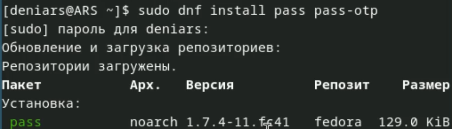
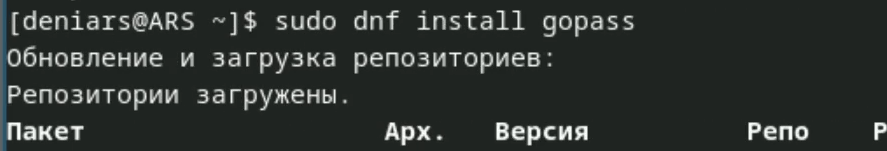
Выводим список gpg ключей
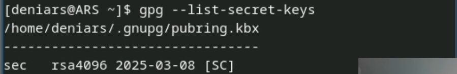
И инициализируем хранилище
Синхранизируем с git
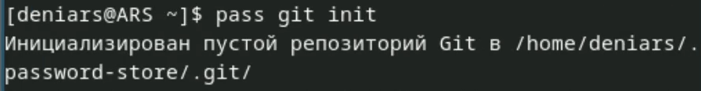
Задаем адрес репозитория на хосте

Для синхронизации выполняем
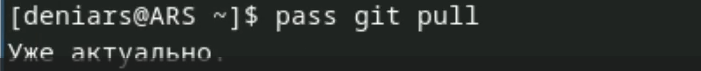
Создаем каталог
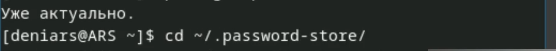
И прописываем следующие команды
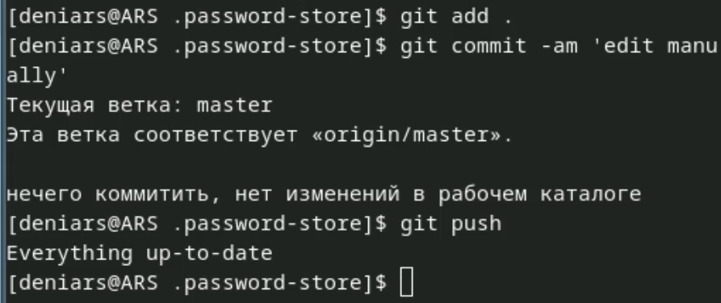
Для проверки статуса синхронизации используем
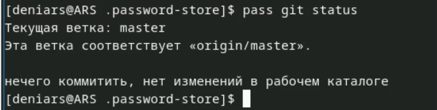
Настройка интерфейса с броузером
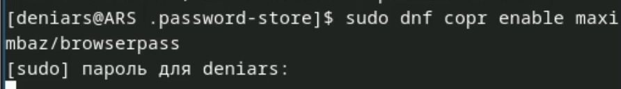
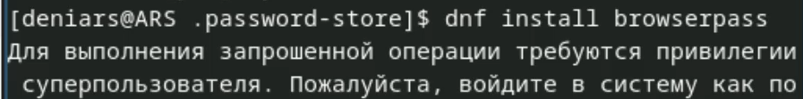
Создаю тхт файл
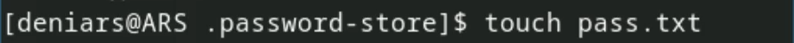
Сохраняю пароль
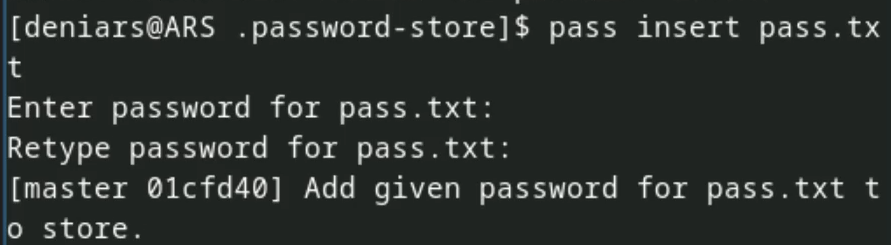
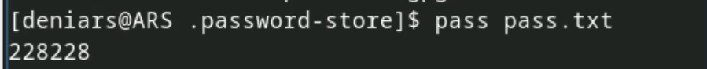
Заменяю пароль
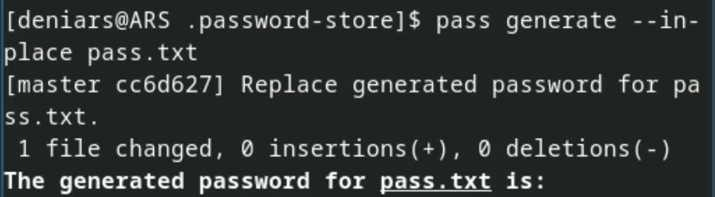
Скачиваю доп. программное обеспечение
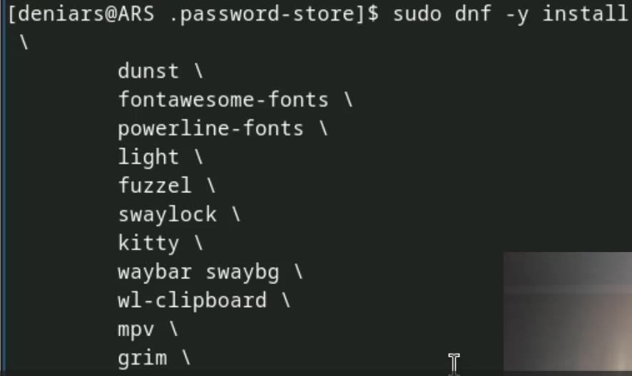
Уснановка шрифтов
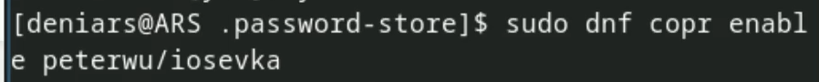
Создаю свой репозиторий
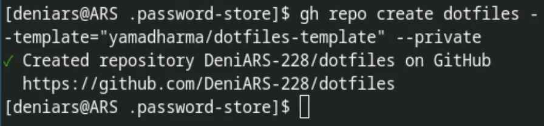
Подключаю свой репозиторий к системе
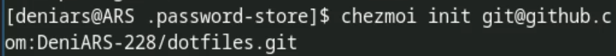
Указываю свое email
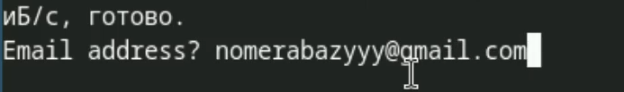
Извлекаю изменения из репозитория
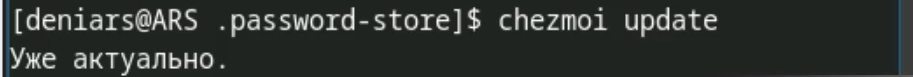
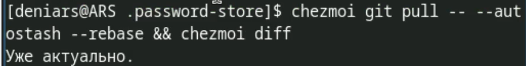
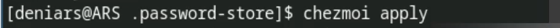
Автоматическое обновление
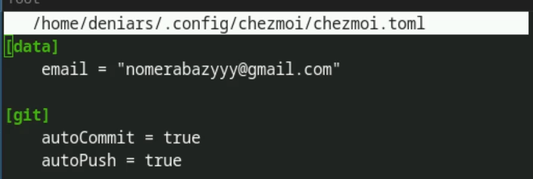
Мы научились работать с менеджером паролей pass
:::